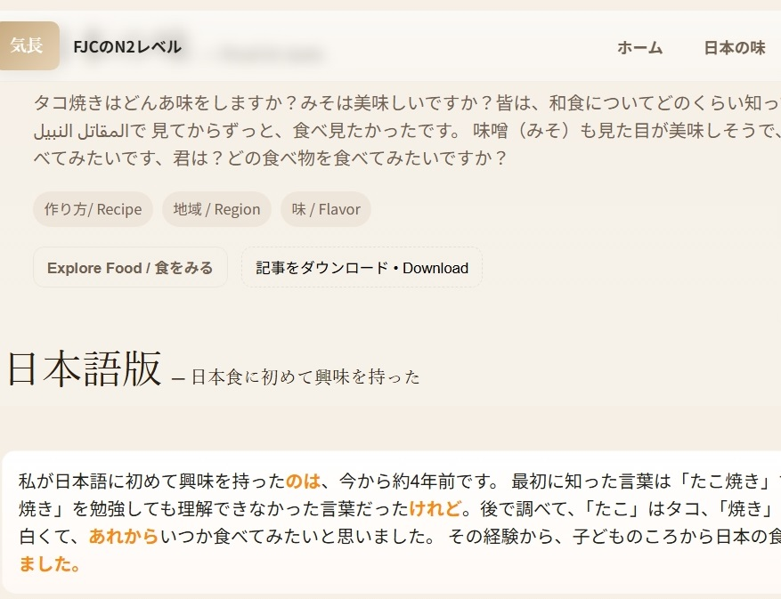

N2
N2 Students Magazine
📢 نقدم لكم أول مجلة رقمية لطلاب N2! 📰💻 هذه المجلة تم تقسيمها إلى أقسام مختلفة، وما أعجبني فيها كثيراً هو أن الطلاب أضافوا ملفات صوتية 🎧! لقد قدم كل طالب نفسه وشرح الجزء الخاص به بطريقة رائعة. تأكدوا من تصفح كل محتوى المجلة وشاركوا رأيكم 👀💬
Visit